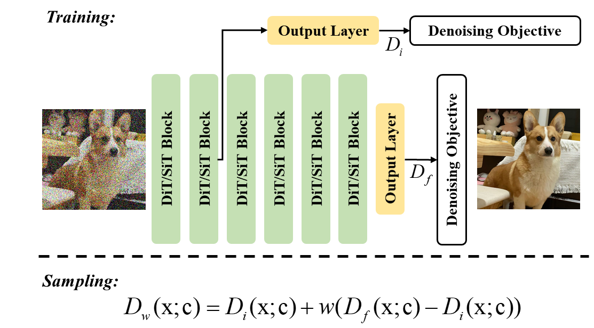
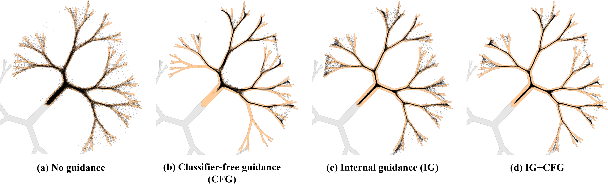
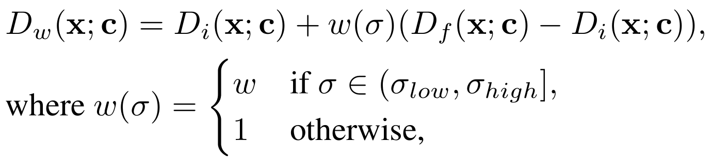
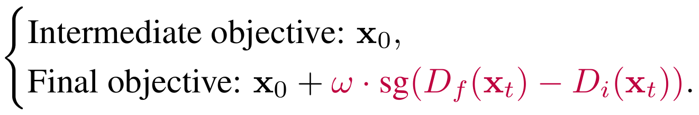
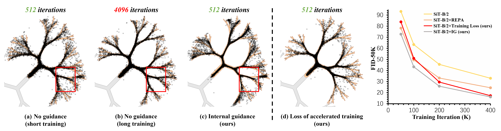
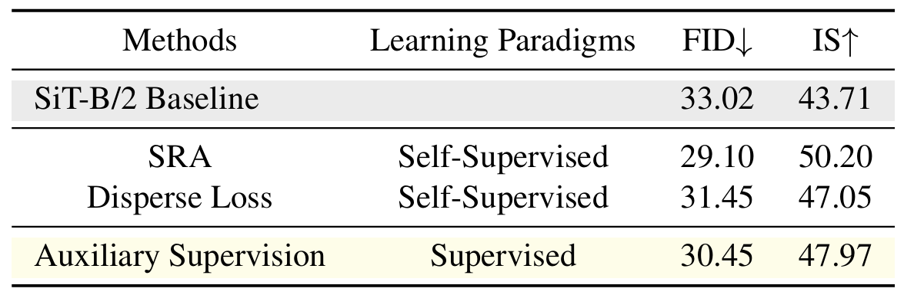
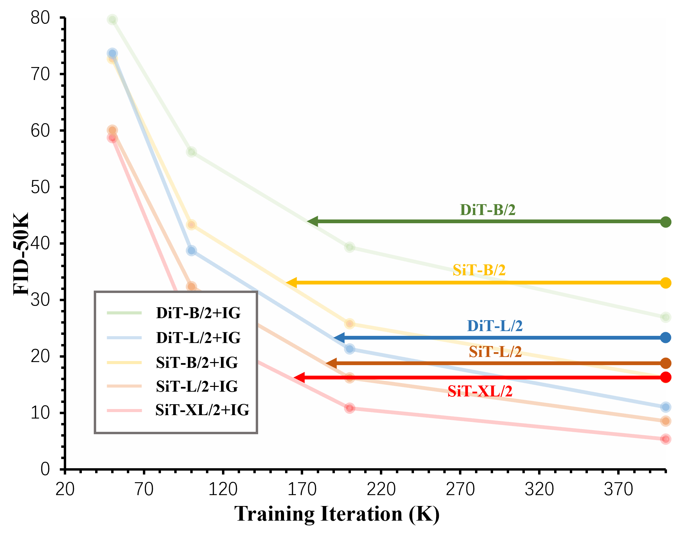
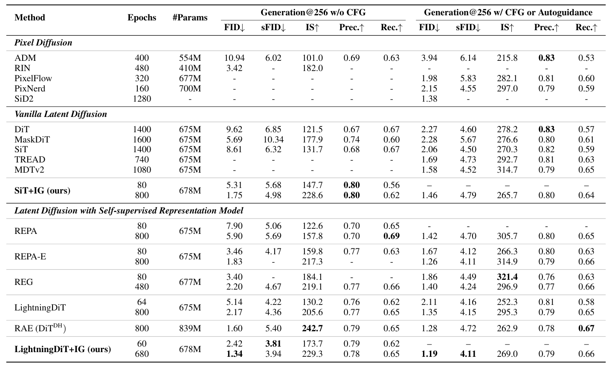
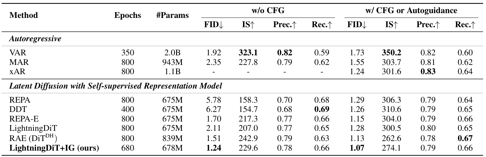

Xingyu Zhou1,
Qifan Li1,
Xiaobin Hu2,
Hai Chen3,4,
Shuhang Gu1,*
1University of Electronic Science and Technology of China
2National University of Singapore
3Sun Yat-sen University
4North China Institute of Computer Systems Engineering
*Corresponding Author
🔥 New SOTA on 256 × 256 ImageNet generation. We present Internal Guidance (IG), a simple yet powerful guidance mechanism for Diffusion Transformers. LightningDiT-XL/1 + IG sets a new state of the art with FID = 1.07 on ImageNet, while achieving FID = 1.24 without classifier-free guidance. IG delivers dramatic quality gains with far fewer training epochs, adds negligible overhead, and works as a drop-in upgrade for modern diffusion transformers.

(a) Internal Guidance (IG) is a lightweight guidance framework for Diffusion Transformers that leverages the model’s own internal dynamics to improve both generation quality and training efficiency.
During training, IG introduces a simple auxiliary supervision at an intermediate layer, enabling the model to produce a weaker but semantically meaningful intermediate prediction alongside the final output. This additional supervision helps stabilize optimization and alleviates gradient vanishing in deep diffusion transformers.
(b) At inference time, IG treats the intermediate output as an internal “weaker model” and guides the final prediction by extrapolating between intermediate and final-layer outputs. This yields an autoguidance-like effect without requiring degraded models, extra training, or additional sampling steps. As a result, IG enhances sample fidelity while preserving diversity.
(c) IG is fully plug-and-play and can be seamlessly integrated into existing Diffusion Transformer architectures. Moreover, it is complementary to classifier-free guidance (CFG) and guidance intervals, enabling further performance gains. Extensive experiments demonstrate that IG consistently improves generation quality across model scales and backbones, achieving state-of-the-art results with minimal computational overhead.
We conduct a 2D toy example experiment similar to Autoguidance to further analyze the role of the IG.




We demonstrate the effectiveness of the IG that we have proposed.


FID-50K comparison under random class sampling.

FID-50K comparison under uniform class sampling.


[1] Karras, Tero, et al. "Guiding a diffusion model with a bad version of itself." NeurIPS 2024.
[2] Yu, Sihyun, et al. "Representation alignment for generation: Training diffusion transformers is easier than you think." ICLR 2025.
[3] Yao, Jingfeng, et al. "Reconstruction vs. generation: Taming optimization dilemma in latent diffusion models." CVPR 2025.